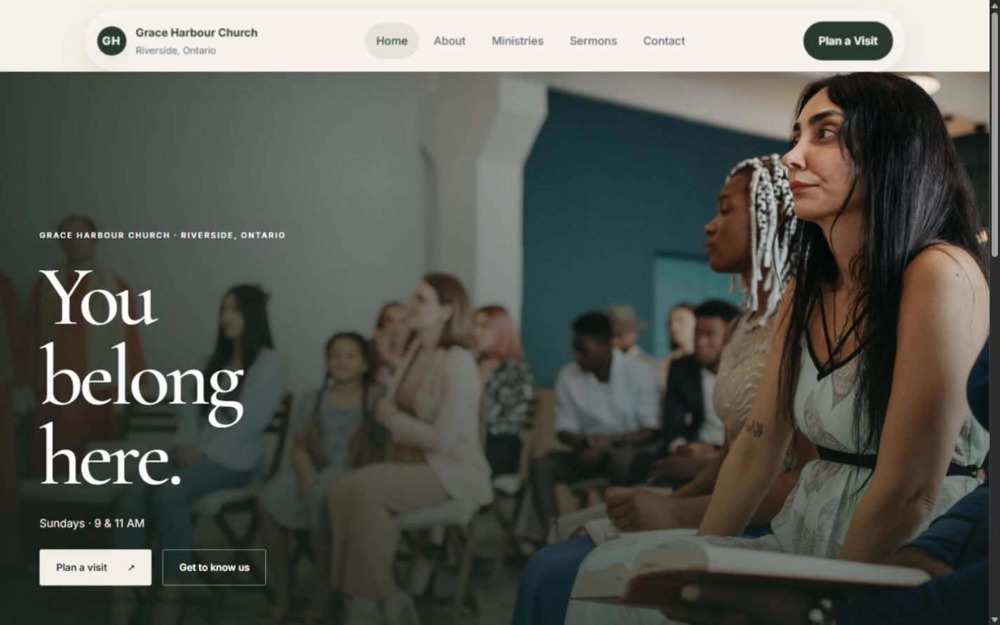
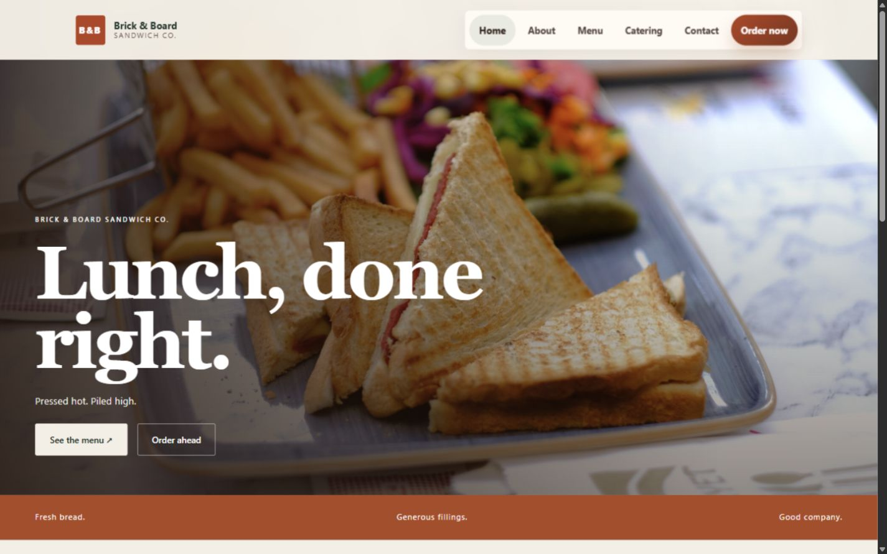
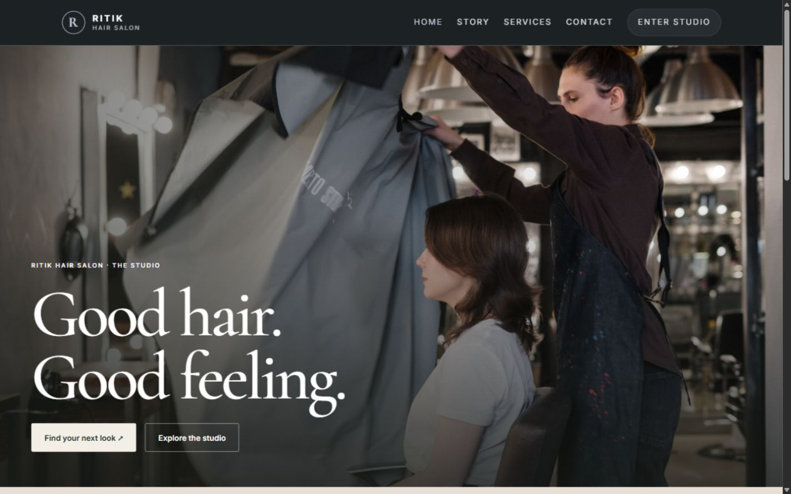
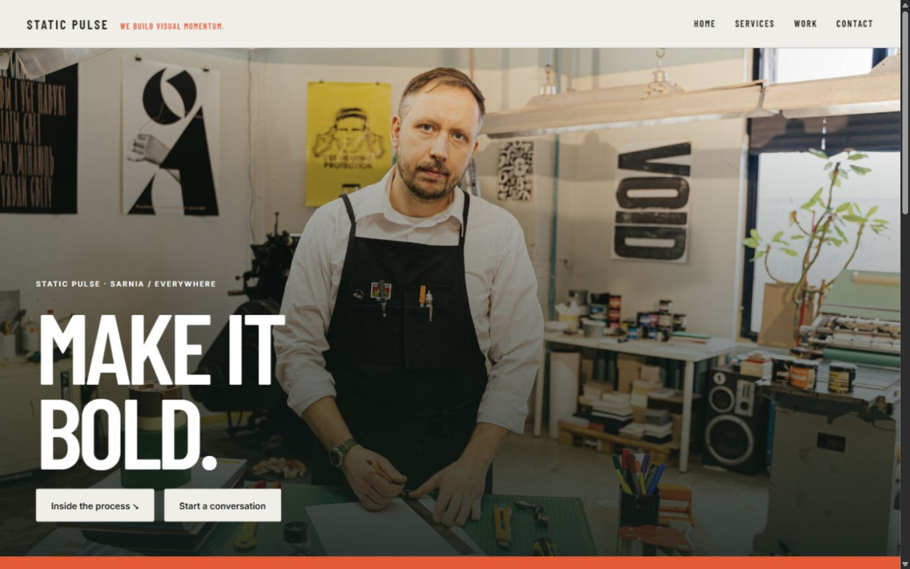

Independent design. Personal support.
Great work.Better websites.
Websites for churches, nonprofits
& businesses with something to say.
Sarnia, Ontario · Working with good people.Scroll to explore
A website that feels like you.
You do good work.
Let’s give it a great home.
I’m Ebin, a web designer in Sarnia. I bring design, clear communication, and practical digital support together for churches, nonprofits, and businesses.
A little more about meSelected work
Selected websites.

Design explorations
Website concepts.

Common Ground

Grace Harbour Church

Brick & Board Sandwich Co.

Ritik Hair Salon
